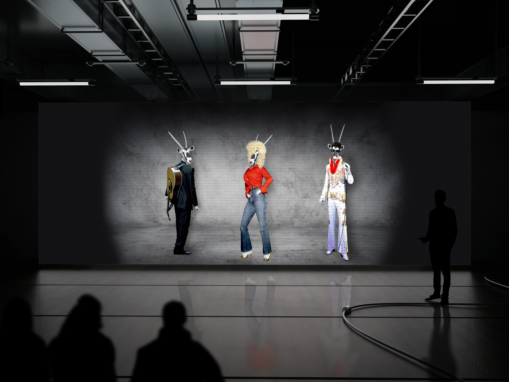
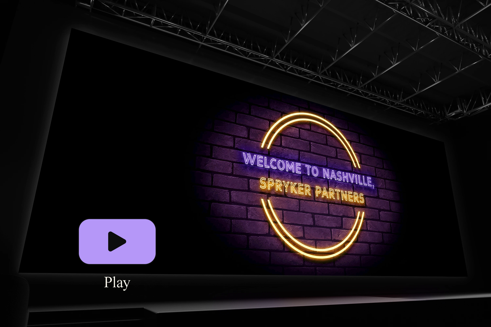

INTRO
Per l’evento EXCITE a Nashville, Spryker Systems ha richiesto la creazione di grafiche promozionali che riflettessero il tema country music e rendessero l’evento memorabile per i nuovi partner. Le grafiche includevano varianti della mascotte aziendale, Oskar, stilizzate per rappresentare personaggi iconici come Elvis Presley, Johnny Cash e Dolly Parton e utilizzate per presentazioni, social media e totem a grandezza naturale. Inoltre, sono state sviluppate GIF animate per i backdrop del palco, che emulavano lo stile dei cartelli al neon tipici dei locali di Nashville, creando un’atmosfera coinvolgente e caratteristica per l’evento.
Per l’evento EXCITE a Nashville, Spryker Systems ha richiesto la creazione di grafiche promozionali che riflettessero il tema country music e rendessero l’evento memorabile per i nuovi partner. Le grafiche includevano varianti della mascotte aziendale, Oskar, stilizzate per rappresentare personaggi iconici come Elvis Presley, Johnny Cash e Dolly Parton e utilizzate per presentazioni, social media e totem a grandezza naturale. Inoltre, sono state sviluppate GIF animate per i backdrop del palco, che emulavano lo stile dei cartelli al neon tipici dei locali di Nashville, creando un’atmosfera coinvolgente e caratteristica per l’evento.

LA SFIDA
Le sfide principali riguardavano l’adattamento della mascotte aziendale a stili diversi, senza compromettere la coerenza visiva. La creazione delle versioni di Oskar in posa e abbigliamento iconico è stata particolarmente complessa, poiché richiedeva di manipolare immagini di cantanti famosi e adattarle alla struttura del personaggio, sebbene le risorse fotografiche disponibili non fossero sempre ottimali.
Le sfide principali riguardavano l’adattamento della mascotte aziendale a stili diversi, senza compromettere la coerenza visiva. La creazione delle versioni di Oskar in posa e abbigliamento iconico è stata particolarmente complessa, poiché richiedeva di manipolare immagini di cantanti famosi e adattarle alla struttura del personaggio, sebbene le risorse fotografiche disponibili non fossero sempre ottimali.

LA SOLUZIONE
Per creare grafiche di forte impatto, è stata sviluppata una serie di versioni della mascotte, ciascuna pensata per esprimere l’essenza dei personaggi rappresentati. Per ottenere risultati realistici, sono state adottate soluzioni creative utilizzando immagini di costumi di Halloween, foto da musei delle cere e persino scatti promozionali cinematografici. L'integrazione di elementi iconici come costumi e accessori è stata gestita mantenendo un alto livello qualitativo e rispettando i cliché legati al tema country. Oltre alle immagini statiche, sono state create delle grandi GIF animate per riprodurre l’aspetto dei cartelli al neon tipici di Nashville, con messaggi personalizzati per gli ospiti dell’evento. Questo mix di elementi statici e animati ha permesso di creare un’esperienza visiva variegata e coinvolgente.
Per creare grafiche di forte impatto, è stata sviluppata una serie di versioni della mascotte, ciascuna pensata per esprimere l’essenza dei personaggi rappresentati. Per ottenere risultati realistici, sono state adottate soluzioni creative utilizzando immagini di costumi di Halloween, foto da musei delle cere e persino scatti promozionali cinematografici. L'integrazione di elementi iconici come costumi e accessori è stata gestita mantenendo un alto livello qualitativo e rispettando i cliché legati al tema country. Oltre alle immagini statiche, sono state create delle grandi GIF animate per riprodurre l’aspetto dei cartelli al neon tipici di Nashville, con messaggi personalizzati per gli ospiti dell’evento. Questo mix di elementi statici e animati ha permesso di creare un’esperienza visiva variegata e coinvolgente.

RISULTATO
Le grafiche create hanno contribuito a migliorare l’esperienza visiva dell’evento, immergendo i partecipanti nel tema country e rendendo la mascotte un elemento centrale di engagement. La varietà degli output visivi ha suscitato feedback positivi da parte del team di marketing, che ha apprezzato l’abilità nel tradurre l’identità del brand in contesti visivi diversi senza perdere coerenza. Durante l’evento, i dipendenti hanno condiviso sui social media video e immagini dei partecipanti mentre posavano con i totem e interagivano con le grafiche, dimostrando l’efficacia del progetto nel creare un’atmosfera coinvolgente e memorabile.
Le grafiche create hanno contribuito a migliorare l’esperienza visiva dell’evento, immergendo i partecipanti nel tema country e rendendo la mascotte un elemento centrale di engagement. La varietà degli output visivi ha suscitato feedback positivi da parte del team di marketing, che ha apprezzato l’abilità nel tradurre l’identità del brand in contesti visivi diversi senza perdere coerenza. Durante l’evento, i dipendenti hanno condiviso sui social media video e immagini dei partecipanti mentre posavano con i totem e interagivano con le grafiche, dimostrando l’efficacia del progetto nel creare un’atmosfera coinvolgente e memorabile.